1. Модели очередей в вычислительных системах. Экспоненциальные системы с переменными параметрами
1.1. Очереди в вычислительных системах.
1.2. Структура системы массового обслуживания.
1.3. Типы распределений интервалов между поступлениями заявок и длительности обслуживания.
1.4. Модели, описываемые процессами рождения и гибели.
1.5. Простейшая модель оценки загрузки оператора вычислительной системы.
1.6. Модель многодоступной вычислительной системы.
1.7. Экспоненциальные системы с переменными параметрами.
1.8. Двухфазная модель вычислительной системы с переменным режимом работы.
1.9. Формулы для вычисления стационарных вероятностей.
2. Теория очередей и расчет параметров Intranet-сети. Особенности применения теории очередей и расчета параметров Intranet-сети.
3. Модели программ. Методика моделирования ресурсов ВС. Модели устройств-ресурсов и способы их описания
3.1. Аналитический способ определения характеристик модели программы.
3.2. Вычисление характеристик трудоемкости.
3.3. Оценка средней трудоемкости алгоритмов.
3.4. Оценка минимальной и максимальной трудоемкости алгоритма.
3.5. Модель процессора и оперативной памяти.
3.6. Модель мультиплексного канала.
3.7. Модели селекторных каналов.
1. 'Модели очередей в вычислительных системах. Экспоненциальные системы с переменными параметрами'
Методические указания
В данной лекции рекомендуется рассмотреть существующие модели очередей в вычислительных системах, провести их анализ.
Методы решения задач количественного анализа очередей составляют предмет одного из разделов теории вероятностей, известного, под названием теория очередей или теория массового обслуживания.
Поэтому необходимо рассмотреть основные результаты теории массового обслуживания, применимые к оценке различных показателей качества ВС.
Особое внимание при этом стоит уделить конкретным приложениям рассматриваемых теоретических моделей.
С целью повышения загрузки (уменьшения простоев) программных и аппаратных ресурсов вычислительных си-стем (ВС) современная организация вычислительного процесса предусматривает возможность создания к ним очередей.
Примерами могут служить очередь заданий, ожидающих распределения памяти, очереди заданий к центральному процессору и на ввод-вывод.
Ожидающие того или иного вида обслуживания задания (в других случаях это могут быть запросы, сообщения, задачи, про-цессы или программы) будем называть заявками, а устройство, предназначенное для их обслуживания (напри-мер, память, центральный процессор (ЦП), устройство ввода-вывода),- обслуживающим устройством.
В ВС возможны очереди, в которых заявки не являются заданиями в обычном смысле этого слова.
Так, на-пример, в мультипроцессорных ВС, как правило, работать с данным модулем памяти (производить считывание-запись) в каждый момент времени может только какой-то один ЦП.
В качестве обслуживающего устройства может выступать и системная программа, которая не может одновременно использоваться более чем одним заданием или процессом. Такие программы называют последовательно используемыми.
Процесс, у которого возникло обращение к последовательно используемой программе во время ее использования другим процессом, блокируется и должен ждать момента освобождения этой программы.
Примеры очередей, образующихся в ВС, можно продолжить. Однако и из уже рассмотренных примеров яс-но, что очереди в ВС могут возникать самыми разнооб-разными путями и на различных уровнях.
При количественном анализе очередей в ВС требуемся дать ответ, по крайней мере, на два вопроса: насколько за-гружено рассматриваемое, обслуживаемое устройство, и каково время ожидания заявок в очереди?
Оба крайних случая, когда обслуживающее устройство загружено мало, т. е. подолгу простаивает, и когда загрузка чрезмерно велика, вследствие чего заявки длительное время ожидают обслуживания, требуют принятия корректирующих решений в управлении вычислительным процессом.
По-скольку в ВС многие ресурсы взаимосвязаны, излишняя загрузка одного из них и недостаточная загрузка другого, могут привести к уменьшению пропускной способности ВС в целом.
Методы решения задач количественного анализа оче-редей составляют предмет одного из разделов теории вероятностей, известного, под названием теория очередей или теория массового обслуживания.
Далее рассмотрим основные результаты теории массового обслуживания, применимые к оценке различных показателей качества ВС.
Особое внимание при этом уделяется конкретным приложениям рассматриваемых теоретических моделей.
Хотя ВС представляет собой взаимосвязанную сово-купность вычислительных ресурсов, в ряде случаев основной интерес представляет задача оценки загруженно-сти одного из этих ресурсов, например, центрального процессора, накопителя на магнитных дисках или оператора вычислительной установки.
Эту задачу можно решать в рамках моделей систем массового обслуживания, с одним обслуживающим устройством, методы исследования кото-рых составляют наиболее развитый и завершенный раз-дел теории.
Основные элементы системы массового обслуживания (СМО) показаны на рис. 3.1.

Обслуживаемой единицей в СМО является заявка.
Заявки поступают на обслуживающее устройство.
Если поступающие в СМО заявки не могут быть удовлетворены немедленно, то возникает очередь.
Заметим, что очередь присуща не всякой СМО.
Существуют такие СМО, в которых очередь не допускается и заявка, заставшая обслуживающее устройство занятым, теряется.
Если в момент поступления заявки обслуживающее устройство занято, то заявка занимает очередь к нему, где ожидает начала обслуживания.
Выбор заявки на обслуживание в какой-то момент времени производится в соответствии с некоторым правилом, которое называется дисциплиной обслуживания.
Далее выполняется обслуживание заявки, и после завершения обслуживания заявка покидает систему.
Выходящий поток обслуженных заявок может оказаться весьма важным в тех случаях, когда он является входящим для другой СМО.
Так, например, программы могут попеременно требовать обслуживания центрального процессора и процессора (устройства) ввода-вывода.
И так рассмотрим элементы СМО такие, как входящий поток заявок, механизм обслуживания и дисциплина обслуживания.
Заявки выбираются из некоторой совокупности или источника заявок.
Эта совоупность может быть конечной или бесконечной.
В последнем случае математическая модель СМО будет более простой.
Поэтому предположение о бесконечности источ-ника заявок часто делается даже в случае конечного, но достаточно большого числа заявок в исходной совокупности.
Другой важной характеристикой входящего потока за-явок является статистическая картина поступлений зая-вок во времени.
Самую простую статистическую картину дает регулярный входящий поток, когда заявки посту-пают в равноотстающие друг от друга моменты времени.
Если интервал времени между поступлениями заявок равен
 , то
интенсивность поступления заявок (в единицу
времени) есть
, то
интенсивность поступления заявок (в единицу
времени) есть  .
.
Представление о регулярном входящем потоке не только не соответствует числу реальных предположений, но и не является наиболее простым с точки зрения получения аналитических результатов.
Простейшим с аналитической точки зрения и соответствующим многим приложениям является предположение о совершенно случайной картине поступления заявок, описываемой пуассоновским процессом.
Более точно, входящим потоком заявок называется неубывающий случайный процесс X(t), принимающий целочисленные значения, равные числу заявок, поступивших за промежуток времени (0, t).
Пуассоновский случайный процесс получается при следующих предположениях.
 - интенсивность
поступления заявок (т. е. среднее число заявок,
поступающих за единицу времени)
- интенсивность
поступления заявок (т. е. среднее число заявок,
поступающих за единицу времени)
Отсюда вероятность отсутствия новых заявок в интервале
времени длины h равна
 .
.
Говоря о совершенно случайной картине поступления заявок, мы имели в виду следующее свой-ство: события, заключающиеся в поступлении или не поступлении заявки на интервале времени длины h, статистически независимы для любых двух непересекающихся интервалов.
При сделанных предположениях поступление заявки на интервале времени длины h можно рассматри-вать как 'успех' в схеме, испытаний Бернулли и число поступивших заявок за, интервал времени (0, t), где t=mh, приближенно равно числу успехов в т испытаниях Бернулли, которое имеет биномиальное распределение:

Полагая
 , а
и сохраняя при этом величину
mh=t постоянной, получим, что число поступивших
заявок Х(t) на интервале времени
(0, t) имеет распределение вероятностей
, а
и сохраняя при этом величину
mh=t постоянной, получим, что число поступивших
заявок Х(t) на интервале времени
(0, t) имеет распределение вероятностей

которое называется распределением Пуассона.
Механизм обслуживания
Второй компонентой СМО является количественная характеристика обслуживания, требуемого отдельной заявкой. Назовем эту характеристику длиной заявки.
Единица измерения длины заявки меняется в зависимости от природы обслуживающего устройства и заявок.
Если обслуживающее устройство - ЦП, а заявки - программы, то длина может измеряться в командах.
Если обслуживающее устройство - линия передачи данных, а заявки - передаваемые сооб-щения или данные, то длина может измеряться в битах или байтах.
Если совокупность заявок однородна, то предполагается, что длины различных заявок являются независимыми в совокупности и одинаково распределен-ными случайными величинами.
В более сложных ситуациях заявки можно разделить на несколько различных типов, каждый из которых составит однородную совокупность заявок.
Чтобы задать механизм обслуживания полностью, помимо распределения длин заявок необходимо также задать быстродействие обслуживающего устройства.
Обозначим величину быстродействия через С.
Единица измерения быстродействия зависит от типа обслуживания.
Если обслуживающее устройство - ЦП, то быстродействие измеряется в операциях в секунду.
Если обслуживающее устройство - канал или линия передачи данных, то быстродействие, т. е. скорость передачи данных, измеряется в битах в секунду.
Если длина заявки равна S [единиц обслуживания] и она обслуживается устройством с быстродействием С [единиц обслуживания в секунду], то отношение S/C {секунд} называется длительностью обслуживания заявки.
Его среднее значение
 [секунд] называется
средней длительностью обслуживания, а обратная к
ней величина
[секунд] называется
средней длительностью обслуживания, а обратная к
ней величина
 называетсяинтенсивностью обслуживания.
называетсяинтенсивностью обслуживания.
Пусть - длительность обслуживания k-й. заявки.
Если случайные величины , независимы в совокупности, одинаково распределены и не зависят от входящего потока, то такое обслуживание называется рекуррентным.
В некоторых случаях быстродействие меняется в за-висимости от загрузки обслуживающего устройства.
В качестве примера рассмотрим СМО с l обслуживающими устройствами и общей очередью.
Поступившая заявка обслуживается любым свободным обслуживающим устройством.
Для простоты предположим, что все обслуживающие устройства имеют одинаковое быстродействие, скажем, С.
Определим состояние СМО как число находящихся в ней заявок n (как на обслуживании, так и в очереди).
Тогда общее быстродействие станции обслуживания, состоящей из l обслуживающих устройств, зависит от состояния п и определяется формулой
С{п)=С min{n, l).
Дисциплина обслуживания
Наиболее простой и хорошо известной является дисциплина обслуживания 'первый пришел-первый обслужен', при которой заявки обслуживаются полностью без прерываний в порядке их поступления, причем заявка, поступившая в момент простоя обслуживающего устройства, сразу же начинает обслуживаться.
Легко представить себе ситуации, когда эта дисциплина нежелательна. Например, часто бывает, что одни заявки важнее других и заслуживают предпочтительного обслуживания.
Разделение заявок на группы, по степени их важности осуществляется с помощью приоритетных дисциплин обслуживания, и соответствующая система массового обслуживания называется системой с приоритетами.
Правило назначения приоритетов определяет порядок, в котором будут обслуживаться ожидающие заявки.
Приоритетные дисциплины обслуживания бывают двух типов: с абсолютными приоритетами и с относительными приоритетами.
Если обслуживание текущей заявки прерывается при появлении заявки с более высоким приоритетом и последняя немедленно начинает обслуживаться, то говорят, что имеет место дисциплина обслуживания с абсолютными приоритетами.
Если прерывание обслуживания не допускается, то имеет место дисциплина обслуживания с относительными приоритетами.
1.3. Типы распределений интервалов между поступлениями заявок и длительности обслуживания
1. Экспоненциальное распределение - самое простое для получения аналитических результатов. При экспоненциальном распределении длительности обслуживания величина, обратная к средней длительности обслуживания является интенсивностью обслуживания.
2. Гамма-распределение и распределение Эрланга - наблюдается в системе, состоящей из нескольких последовательно соединенных устройств и обслуживания новой заявки. На первом этапе может начаться только в момент ухода заявки из системы после завершения последнего этапа. Тогда общая длительность обслуживания заявки на всех этапах имеет распределение Эрланга.
3. Гиперэкспоненциальное распределение - описывает распределение длительности обслуживания заявки в системе из совокупности параллельных устройств.
Для определения типа системы массового обслуживания часто используются обозначения вида A/B/l, где символы A и B обозначают входящий поток и распределение длительности обслуживания соответственно, а l- число параллельных устройств обслуживания в СМО.
В случае ограничения на допустимое число заявок используется дополнительный параметр - A/B/l/m.
Например, под системой M/M/1 понимается СМО с одним обслуживающим прибором, пуассоновским входящим потоком и экспоненциально распределенной длительностью обслуживания.
Показатели качества
Математическая модель реальной системы строится для того, чтобы оценить какие-то показатели качества этой системы.
Для систем с очередями необходимо, прежде всего, оценить
загруженность системы. Простейшей мерой загруженности
является нагрузка
 :
:

Если величины, стоящие в числителе и знаменателе этого
отношения, равны соответственно
и
 то
то
 .
.
Если нагрузка превосходит единицу, то это означа-ет, что заявки поступают быстрее, нежели их успевает обрабатывать обслуживающее устройство.
В СМО с l параллельными обслуживающими устройствами на каждое из них приходится в среднем заявок в единицу времени.
Поэтому нагрузка в такой СМО может быть поднята до величины I.
С нагрузкой тесно связан другой показатель качества - коэффициент использования, или коэффициент загрузки обслуживающего устройства.
Этот показатель качества, обозначаемый через u, определяется как доля времени, в течение которого обслуживающее устройство занято.
Рассмотрим достаточно длительный интервал времени
Т. В СМО с l обслуживающими устройствами на
каждое из них в среднем за время Т придется по
 заявок в предположении, что поток заявок равномерно
распределяется по I устройствам.
заявок в предположении, что поток заявок равномерно
распределяется по I устройствам.
Поскольку каждая заявка требует в среднем длительности
обслуживания
, то общее среднее время
занятости обслуживающего устройства составит
 .
.
Поделив эту величину на Т, получим .
Поскольку обслуживающее устройство не может быть занято более 100 % времени, то коэффициент использования не может превосходить единицу.
Таким образом, получаем следующее выражение для коэффициента использования СМО с I обслуживающими устройствами:
 .
.
При анализе моделей вычислительных систем одним из основных показателей качества служит пропускная способность.
Эта величина определяется как среднее число заявок, обслуженных за единицу времени.
В СМО с I обслуживающими устройствами за каждую единицу времени в среднем завершается обслуживание заявок, откуда вытекает, что пропускная способность равна

Таким образом, пропускная способность совпадает с
интенсивностью поступления заявок
до тех пор, пока
меньше максимальной интенсивности обслуживания
, выше которой пропускная
способность не поднимается.
С точки зрения заявки самым важным показателем качества, по-видимому, является время, которое она проводит в ожидании обслуживания.
Определим время ожидания Wj заявки j, равным отрезку времени от момента ее поступления в систему до момента начала ее обслуживания, а время ответа Тj, равным отрезку времени от момента поступления заявки j в систему до момента завершения ее обслуживания.
Таким образом, имеем следующее простое соотношение (индекс j опущен):
Время ответа (Т) == время ожидания (W) + длительность обслуживания (S).
Последней интересующей нас мерой загруженности является 'длина очереди'.
Пусть случайный процесс Q(t) есть число заявок, ожидающих обслуживания в момент времени t.
Аналогично, определим N(t) как число заявок, находящихся в системе либо в очереди, либо на обслуживании.
Процесс N(t) называют длиной очереди.
В СМО с I обслуживающими устройствами Q(t) и N{t) связаны соотношением
Q(t)= max(0, N(t)-1).
Изучение распределения числа заявок, ожидающих обслуживания, требуется, например, при оценке объема буферной памяти, необходимой для размещения поступающих заявок.
Процессы Q{t) и Ni(t) - это случайные процессы с не-прерывным временем.
- интенсивность поступления заявок в СМО и
 , а интенсивность выходящего потока заявок в
произвольный момент времени равна
, а интенсивность выходящего потока заявок в
произвольный момент времени равна
 ,
, - вероятность простоя обслуживающего устройства в
установившемся режиме,
- вероятность простоя обслуживающего устройства в
установившемся режиме,
 - вероятность того, что устройство работает.
- вероятность того, что устройство работает.
 ,
,Две из самых важных формул теории массового обслуживания отражают связь между средним временем ответа (временем ожидания) и средним числом заявок, находящихся в системе (ожидающих обслуживания)
 ,
,
,
,
1.4. Модели, описываемые процессами рождения и гибели
Определение процесса рождения и гибели начнем с введения формулы:
N(t)=A(t)-D(t),
которая будет описывать число заявок системе, при этом будем считать:
 - момент времени, завершения
заявки j.
- момент времени, завершения
заявки j.
Пусть D(t) будет процессом, которой в момент
времени t будет принимать значения равные числу
всех моментов  , которые
предшествовали значению t. и определим процесс
D(t), как считающий процесс. A(t)
- процесс, который будет принимать значение числа
заявок, поступивших в систему на интервале времени
(0, t).
, которые
предшествовали значению t. и определим процесс
D(t), как считающий процесс. A(t)
- процесс, который будет принимать значение числа
заявок, поступивших в систему на интервале времени
(0, t).
Если же под N(t), в каждый момент времени мы будем понимать размер некоторой популяции, то под процессом A(t) можно понимать общее число точек рождения до времени t, а D(t)- как число погибших членов популяции. Исходя из этого определения N(t)- можно назвать процессом гибели и рождения.
Случайный процесс N(t) (число заявок, ожидающих обслуживание в момент времени t ) будет называться процессом рождения и гибели, если его переходные вероятности:
 ;
;
не будет зависеть от t (будут стационарны) и будут удовлетворять четырем условиям:


для
 .
.
где
 - интенсивность рождения и
- интенсивность рождения и
 - интенсивность гибели в
состоянии m=0,1,2, принимаемые процессом
N(t).
- интенсивность гибели в
состоянии m=0,1,2, принимаемые процессом
N(t).
0(h) - вероятность последнего события, стремящаяся к нулю быстрее, чем h.
Введем понятие - вероятность того, что N(t) находится в состоянии n в момент времени t: :
 , чтобы
, чтобы
 найти, заметим, что N(t)=n. в момент времени
(t+h) тогда, если выполняется одно из
условий:
найти, заметим, что N(t)=n. в момент времени
(t+h) тогда, если выполняется одно из
условий:
N(t)=n и за время (t, t+h) не происходит никаких изменений;
в момент времени t, N(t)
 n
n взаимно
исключают друг друга
n
n взаимно
исключают друг друга
в момент времени t, N(t) n+
в момент времени (t, t+h) осуществляется два или более перехода в n.
Поэтому из четвертого условия следует:

Если обе части уравнения разделить на h, и из
правой в левую перенести ,
учитывая, что h0,
получим выражение:
; (3.1)
Это уравнение выполняется при
п
 1. Если принять n=0, мы получим уравнение вида:
1. Если принять n=0, мы получим уравнение вида:
 ; (3.2)
; (3.2)
Если в начальный момент времени N(0)=i, то
выполняется условие
 ,
,
 при
при  . Таким образом, мы
получили условия существования (3.1) и единства (3.2)
решения системы.
. Таким образом, мы
получили условия существования (3.1) и единства (3.2)
решения системы.
Чтобы случайный процесс N(t) назывался процессом рождения и гибели, нужно найти установившееся (не зависящее от t ) распределение вероятности , которое удовлетворяло бы двум выведенным решениям.
Чтобы доказать это, надо ввести следующее определение: установившееся решение (если существует такое распределение) единственно и для каждого состояния n.
 для нахождения
для нахождения
 (n=0, 1, 2...)
можно использовать систему
(n=0, 1, 2...)
можно использовать систему
 линейных уравнений:
линейных уравнений:
; (3.3)
которые выводятся из уравнения (3.1) с условием, что
 .
.
 ; (3.4)
; (3.4)
где с - постоянная, n=1,2,.... Из (3.2)
следует  , следовательно,
с=0 в (3.4) и получается следующая система
рекуррентных уравнений:
, следовательно,
с=0 в (3.4) и получается следующая система
рекуррентных уравнений:
, (3.5)
где левая часть - это интенсивность перехода из n в n-1, а правая часть это интенсивность перехода из n-1 в n. Отсюда при условии балансировки граф переходов будет выглядеть так:

Рис.3.2. Граф переходов
Теперь же стационарные вероятности будут вычисляться рекуррентно:
 (3.6)
(3.6)
где , (3.7)
определяется по условию ,
так как - распределение
вероятностей. Таким образом, если ряд:
,
так как - распределение
вероятностей. Таким образом, если ряд:
 , (3.8)
, (3.8)
сходится, то, обозначая его сумму через
 , получим
, получим
 (3.9).
(3.9).
Для примера процессов рождения и гибели назовем и кратко определим несколько СМО:
Простейшая система М/М/1
Рассмотрим СМО с одним обслуживающим устройством,
пуассоновским входящим потоком с параметром
и экспоненциально
распределенной с параметром
 длительностью обслуживания.
Легко видеть, что число заявок N(t), находящихся
в системе М/М/1 в момент времени t , описывается
процессом рождения и гибели с
длительностью обслуживания.
Легко видеть, что число заявок N(t), находящихся
в системе М/М/1 в момент времени t , описывается
процессом рождения и гибели с
 и
и
 (n=1, 2, ...). В этом случае рекуррентное
соотношение (3.6) принимает вид:
, где
(n=1, 2, ...). В этом случае рекуррентное
соотношение (3.6) принимает вид:
, где
 . Опираясь на формулы,
выведенные для процесса рождения и гибели:
. Опираясь на формулы,
выведенные для процесса рождения и гибели:
 - средняя длина очереди;
- средняя длина очереди;
- стационарная вероятность того, что в системе находится n заявок.
Система М/М/1 с одноуровневым управлением
Рассмотрим систему М/М/1, в которой интенсивности
поступления заявок
 и их обслуживания
и их обслуживания
 зависят от длины очереди следующим образом:
зависят от длины очереди следующим образом:
 (3.10)
(3.10)
Такое изменение интенсивностей входящего потока и обслуживания естественно назвать одноуровневым управлением.
В случае наличия ограничения на количество заявок в очереди m для системы M/M/1/m стационарное распределение имеет вид:
 ,
n = 0, 1, ..., m
,
n = 0, 1, ..., m
Двухфазная модель вычислительной системы
Одной из простейших моделей мультипрограммной ВС с постоянным уровнем мультипрограммирования является замкнутая двухфазная СМО, представлена на рис. 3.3.

Рис.3.3. Замкнутая двухфазная СМО
Первое обслуживающее устройство интерпретируется как центральный процессор (ЦП), второе как устройство ввода-вывода (УВВ), объединяющее канал и внешнюю память (ВП), а заявками являются m программ, одновременно находящихся в оперативной памяти. Предполагается, что в процессе выполнения каждой программы возникают запросы к ВП, что соответствует перемещению заявки в рассматриваемой СМО из очереди 1 в очередь 2. После удовлетворения запроса к ВП программа готова к выполнению ЦП и этому соответствует перемещение заявки из очереди 2 в очередь 1. Предполагается, что длительности обслуживания заявок независимы между собой, на каждой фазе в отдельности и на различных фазах и что обслуживание заявок происходит в порядке их поступления.
Система М/М/l/
Пусть N(t) - число заявок, находящихся на
обслуживании в момент времени t. Если
N(t)=n
 l, то n заявок одновременно обслуживаются
различными обслуживающими устройствами. Если же
N(t)=n> l, то в системе будут ожидать
обслуживания n-l заявок. В такой ситуации имеем
процесс рождения и гибели с параметрами
(n=0, 1, 2...),
l, то n заявок одновременно обслуживаются
различными обслуживающими устройствами. Если же
N(t)=n> l, то в системе будут ожидать
обслуживания n-l заявок. В такой ситуации имеем
процесс рождения и гибели с параметрами
(n=0, 1, 2...),
 .
.
Система с квазислучайным источником заявок
Рассматриваемая в этом пункте задача известна в
литературе как задача об обслуживании (ремонте) одним
мастером (оператором) К машин. Каждая машина
может находиться в одном из двух состояний: "рабочем" и
"нерабочем" (требующем ремонта). При поломке машины,
приводящей к нерабочему состоянию, она становится в
очередь на ремонт. Если мастер (обслуживающий
устройство) свободен, то он немедленно приступает к
ремонту (обслуживанию) машины; в противном случае
поломанная машина должна ждать обслуживания. Пусть любая
исправная машина может сломаться в промежуток времени
(t, t+h) с вероятностью vh+0(h) и поломки
исправных машин происходят независимо от состояний
других машин. Таким образом, если машина исправна в
момент времени t, то промежутки времени от
t до момента ее поломки имеют экспоненциальное
распределение 1/v. При этих предположениях
говорят, что К машин образуют квазислучайный
источник заявок. Легко видеть, что общий поток заявок
(поломок) от К независимых источников (машин)
будет процессом только рождения
 с интенсивностью
с интенсивностью
 (3.11)
(3.11)
Предположим далее, что длительности обслуживания распределены экспоненциально со средним . Таким образом, число заявок N(t), находящихся в системе в момент времени t, являются процессом рождения и гибели с интенсивностью рождения (указанной выше) и интенсивностью гибели
=
(n1).
1.5. Простейшая модель оценки загрузки оператора вычислительной системы
ВС, работающая под управлением операционной системы, генерирует сообщения, требующие действий оператора. При интенсивной загрузке ВС и поддержания уровня мультипрограммирования, равного четырем - шести, в среднем за час на системную консоль поступает несколько сот различных сообщений. Для оценки загрузки оператора можно применить рассмотренную в предыдущем пункте модель, если считать, что числу машин К соответствует уровень мультипрограммирования (т.е. число программ, одновременно находящихся в оперативной памяти), а обслуживающему устройству (мастеру) соответствует оператор, реагирующий на сообщения (заявки), поступающие от программ (источника заявок).
1.6. Модель многодоступной вычислительной системы
Рассматриваемая модель схематически показана на рис. 3.4. Здесь К машинам соответствует К терминальных пользователей, а мастеру - многодоступная вычислительная система, т.е. ВС, обслуживающая некоторую совокупность терминалов, поломке машины соответствует издание запроса к ВС с терминала.

Рис. 3.4.Модель многодоступной вычислительной системы
Общие свойства
Пусть
- пропускная способность.
Т.е. число заявок, завершающих обслуживание в единицу
времени в рассматриваемой системе. Тогда интенсивность
поступлений и уходов заявок из блока, очерченного на
рис. 5 пунктиром, равна .
Определим случайную величину U как время
обдумывания пользователя, равное интервалу времени с
момента завершения выполнения его предыдущего запроса к
ВС до момента издания им следующего запроса к ВС, и
время ответа Т как интервал времени с момента
издания запроса пользователем (ввода с терминала) до
момента завершения его выполнения системой. Время ответа
и время обдумывания в сумме составляют цикл одного
взаимодействия пользователя с ВС. Из формулы Литтла
получаем , т.е. среднее
значение цикла одного взаимодействия пользователя с ВС в
установившемся режиме
Отметим, что это соотношение имеет место при любой дисциплине обслуживания. Для его справедливости не требуется также независимости времен обдумывания U и специальных предположений о виде их распределения. Все что требуется - это существование установившегося режима СМО.
Пусть
- вероятность простоя
обслуживающего устройства в установившемся режиме и
S - средняя длительность обслуживания одного
запроса. Тогда в установившемся режиме обслуживающее
устройство может обработать
запросов в единицу времени, т.е.
 .
.
Это соотношение также справедливо при, весьма, общих условиях. Единственное ограничение состоит в том, чтобы обслуживающее устройство не простаивало при наличии не обслуженных заявок, иначе длительности обслуживания заявок будут зависеть от дисциплины обслуживания.
Среднее время ответа:

Определим интенсивность обслуживания:
=1/S и интенсивность
поступления заявок (запросов):
. Обозначим их отношение через
 , т.е.
, т.е.
 .
.
Тогда нормированное среднее время ответа (т.е. T/S) равно
.
При выводе последней формулы опять не делалось никаких
специальных предположений. Эта формула верна практически
при любых предположениях : распределения U и
S могут быть произвольными, а дисциплина
обслуживания - любой, не допускающей простоев
обслуживающего устройства при наличии не обслуженных
заявок. Более того, времена обдумывания U и
длительности обслуживания S не обязательно должны
быть последовательностями независимых одинаково
распределенных случайных величин. Средняя длина очереди
в установившемся режиме N (число заявок
(запросов), ожидающих и находящихся на обслуживании)
получается из формулы Литтла:
 , что можно переписать, как
, что можно переписать, как
 .
.
Время ответа
Качество обслуживания отдельного терминального пользователя характеризуется средним временем ответа системы. Обозначая нормированное среднее время ответа через Y(K), в разделе "Система с квазислучайным источником заявок" имеем:
.
Подставляя в последнюю формулу выражение (3.2) для
 , получим
, получим
 .
.
Для вычисления Y(K) удобно воспользоваться следующим рекуррентным соотношением:
Плотность распределения времени ответа получаем в результате свертки плотности :
и плотности распределения S :
Численные значения распределения можно получать с помощью таблиц распределения Пуассона.
1.7. Экспоненциальные системы с переменными параметрами.
Система с гистерезисным управлением
Рассмотрим СМО с одним обслуживающим прибором и
дисциплиной обслуживания "первый пришел - первый
обслужен", которая работает в двух режимах. В режиме
i(i = 1, 2), на вход системы поступает
пуассоновский поток заявок с параметром
и длительностью обслуживания имеет экспоненциальное
распределение со средним
 . Переход из режима 1 в
режим 2 происходит, когда очередь достигает значения
. Переход из режима 1 в
режим 2 происходит, когда очередь достигает значения
 ; возвращение в режим 1
происходит, когда очередь уменьшается до значения
; возвращение в режим 1
происходит, когда очередь уменьшается до значения
 , где 0 <
<
. Такое изменение
интенсивности входящего потока и обслуживания называют
гистерезисным управлением.
, где 0 <
<
. Такое изменение
интенсивности входящего потока и обслуживания называют
гистерезисным управлением.
Далее, для простоты положим
 и обозначим
.
и обозначим
.
Состояния системы определяются парой (n, i), где
n - длина очереди, а i - номер режима.
Занумеруем эти состояния последовательными числами,
каждому состоянию (n,i) при n
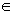
[0,+ q], где
q = -
- 1, поставим в
соответствие число n и каждому состоянию
(n, 2) при n >
+ q поставим в
соответствие число n + q.
Соотношения для стационарных вероятностей:


Средняя длина очереди:

1.8. Двухфазная модель вычислительной системы с переменным режимом работы
Пусть замкнутая двухфазная СМО содержит m заявок,
которые обслуживаются в 2 режимах. Распределения
длительностей обслуживания на первой и второй фазах
являются экспоненциальными с параметрами
 и
и
 (1 и 2 режим). Переход
из одного режима в другой происходит через
экспоненциально распределенные промежутки времени со
средним 1/n , i=1,2.
(1 и 2 режим). Переход
из одного режима в другой происходит через
экспоненциально распределенные промежутки времени со
средним 1/n , i=1,2.
Используя свойства отсутствия последействия, эту модель можно свести к однофазной СМО с конечным числом мест для ожидания, в которой:
в режиме i (i=1, 2,) входящий поток заявок является пуассоновским, с параметром ,
а длительность обслуживания имеет экспоненциальное
распределение со средним
.
Если {P(n1, n2, i)}, n1+ n2= m, - совместное
стационарное распределение числа заявок в очередях 1 и 2
двухфазной СМО в режиме i, и { } - стационарное распределение числа заявок в режиме
i в соответствующей однофазной СМО с конечным
числом мест для ожидания, то:
} - стационарное распределение числа заявок в режиме
i в соответствующей однофазной СМО с конечным
числом мест для ожидания, то:
P(m - n, n, i) =
;
i = 1; n = 0, 1, 2...m.
1.9. Формулы для вычисления стационарных вероятностей


Вопросы для самопроверки:
1. Какая цель создания очереди? Примеры очередей.
2. Какие программы называют последовательно используемыми?
3. Перечислите основные элементы системы массового обслуживания.
4. Какие существуют характеристики входящего потока заявок?
5. Что такое пропускная способность? Формула расчета.
6. Что отражают две самые важные формулы теории массового обслуживания?
7. Опишите систему М/М/1 с одноуровневым управлением.
8. Чем характеризуется качество обслуживания отдельного терминального пользователя?
2. Теория очередей и расчет параметров Intranet-сети Особенности применения теории очередей и расчета параметров Intranet-сети.
В условиях стремительного роста интенсивности информационного обмена в современных сетях часто возникает необходимость в применении научно обоснованных методов предсказания:
- последствий изменений в сети,
- смены топологии сети и т. д.
Последствия изменений в сети могут оцениваться как влияние на:
- производительность,
- время ответа сети,
- доступность тех или иных сервисов и пр.
Желательно также уметь проводить априорную оценку параметров сети до ее развертывания.
ПРИМЕР:
В организации установлено определенное количество рабочих станций, подключенных к сети Token Ring со скоростью 16 Мбит/с.
Необходимо подключить новые рабочие станции сотрудников какого-то отделения организации к действующей сети.
Перед всей организацией сразу встает вопрос - сможет ли существующая локальная сеть справиться с возросшей нагрузкой или для такого отделения необходимо создавать вторую локальную сеть и объединять обе сети мостом?
Существуют и другие случаи, в которых достаточно сложно быстро получить ответ на вопрос о том, насколько возрастет нагрузка на сеть при тех или иных изменениях, и справится ли с ней сеть.
ПРИМЕР 2:
Необходимо впервые создать локальную сеть с сервером.
Конечно, можно, основываясь на опыте какой-либо родственной организации, оценить примерную загрузку, генерируемую каждым персональным компьютером, и на этом основании оценить требуемую производительность всей локальной сети и сервера в частности.
Основным критерием при оценке совокупности параметров сети в данном случае является ее производительность в целом.
При использовании интерактивных приложений реального времени в качестве основной оценочной характеристики обычно используется время ответа сети (иногда оно называется временем реакции сети).
В других случаях ориентируются на пропускную способность сети. (напомнить из прошлых лекций)
При проектировании сети необходимо иметь аналитические инструменты, позволяющие предсказывать производительность по модели сети. (Мы уже говолрии об этом)
Одним из таких инструментов, предназначенных для разработки сетевых и коммуникационных структур, может быть аналитическая модель, основанная на теории очередей.
Можно провести анализ очередей в заданной сетевой структуре, используя формальный аппарат теории очередей или компьютерные программы, например пакет MODSIM, который есть на кафедре.
ПРИМЕР КОНКРЕТНОГО ИСПОЛЬЗОВАНИЯ ТЕОРИИ.
Рассмотрим Web-сервер, который тратит на обработку одного запроса какое-то заранее известное, фиксированное время - допустим одну миллисекунду (это будет также средним временем, затрачиваемым на обработку).
Если средняя скорость поступления запросовравна одному запросу в одну миллисекунду (1000 запросов в секунду), то сервер справится с этой нагрузкой.
Действительно, это произойдет в том случае, когда запросы поступают с одинаковой скоростью (равной, очевидно, одному запросу в каждую миллисекунду).
После поступления запроса сервер немедленно обрабатывает его.
После того как сервер обработал текущий запрос, поступает новый запрос, сервер начинает его обработку и снова укладывается во время.
Более реальная ситуация:
средняя скорость поступления запросов по-прежнему равна одному запросу в миллисекунду, но существует некоторая флуктуация поступления запросов.
Тогда в течение любого миллисекундного периода времени может не приходить запросов вообще, а может поступить сразу несколько запросов.
Но средняя скорость поступления запросов все равно равна одному запросу в миллисекунду и является достаточно четким критерием того, насколько загружен сервер.
С флуктуациями, не регулярностями в поступлении запросов можно справиться, введя буферную память, в которой в течение времени занятости, когда необходимо обработать множество запросов, сервер может сохранять невыполненные запросы.
Или, иными словами, сервер помещает эти запросы в очередь.
Когда сервер завершит обработку текущего запроса, то, если не поступит следующего запроса, он возьмет запрос из очереди и тем самым уменьшит ее.
С этой точки зрения, основным вопросом при разработке сетевой структуры является вопрос о том, насколько большим должен быть буфер сервера.
Для проведения оценок производительности на основе имеющихся данных о загрузке действующей сети или по предполагаемой загрузке вновь проектируемой сети существуют различные подходы:
- Проведение анализа производительности сети после ее внедрения, основываясь на значениях показателей, которые актуальны в данном конкретном случае;
- Выполнение простой оценки работоспособности будущей среды, основанной на существующем опыте разработки и построении подобных сетей;
- Разработка и применение аналитической модели, основанной на теории очередей;
- Разработка и применение программного обеспечения, моделирующего поведение сети (например, на нашей кафедре магистры использовали пакет MODSIM).
Первые два варианта возможны только для простых относительно сетей с незначительной загрузкой и чреваты непредсказуемыми последствиями - не получается сети с желаемыми параметрами.
Проблема еще и в том, что поведение большинства систем при изменении загрузки будет не таким, как интуитивно ожидалось.
Если существует среда, в которой есть разделяемые каналы связи, то производительность такой системы, как правило, экспоненциально уменьшается при увеличении нагрузки.
В результате наблюдается расхождение ожидаемых значений и наблюдаемых (рис. 1).
Загрузка сети определяется долей задействованной пропускной способности.
Если рассматривать мост, который способен обрабатывать 1000 кадров в секунду, то загрузка 0.5 означает скорость передачи 500 кадров в секунду.
Время ответа есть сумма средних времен, затрачиваемых на передачу входящих в сеть кадров.
На рис. 1 верхняя кривая показывает изменение реального времени ответа сети на разделяемых каналах связи при увеличении нагрузки.
Нижняя кривая описывает ожидаемые разработчиком значения.
Две кривые совпадают только в пределах той нагрузки, с которой реально имел дело наш гипотетический разработчик.
Как видим, опыт является достаточно надежным проводником только при половинной загрузке сети. При дальнейшем росте нагрузки производительность сети будет резко снижаться.

Рис. 1. Ожидаемое и реальное времена ответа системы
Использование теории очередей дает достаточно точную оценку, которая, в большинстве случаев, хорошо соответствует действительности.
Недостатком теории очередей является то, что при выводе формул, на которых она основывается и которые, используются для расчета интересующих нас параметров, необходимо принять определенные допущения.
Тем не менее, оказывается, что эти допущения вполне оправданны, а получающиеся результаты близки к тем, которые получаются при программном моделировании сети с такими же параметрами.
Преимуществом теории очередей по сравнению с моделированием является то, что анализ очередей может быть выполнен за сравнительно короткий срок (для большинства реальных ситуаций), в то время как моделирование может занять дни или даже недели - создать программную модель, описывающую требуемую ситуацию, достаточно непросто.
Определение параметров Intranet-системы с очередями

Рис. 2. Базовая схема Inranet-системы с очередью к серверу
Для проведения расчета параметров Intranet-систем с очередями необходимо определить, ЧТО, собственно, входит в состав этой системы и то, какие параметры подлежат оценке. Простейшая Intranet-система с организацией очередей к серверу показана на рис. 2.
Центральным элементом этой системы является сервер, который производит определенные действия с элементами данных (пакетами, кадрами, дейтаграммами и т. п.).
Для рассмотрения этой системы примем некоторые допущения:
- Все элементы данных, поступающие в систему, сохраняются, потеряных заявок нет.
- Если сервер в определенный момент времени простаивает (свободен), элемент данных обрабатывается немедленно.
- В противном случае поступающие элементы данных сохраняются в очереди.
- После выполнения сервером обработки определенного элемента данных, он немедленно отправляется по назначению.
- Если в очереди находятся другие элементы данных, то один из них немедленно поступает на обработку в сервер.
На рис. 2 также показаны некоторые важные параметры, которые используются при расчетах.
Элементы данных поступают в эту систему с некоторой
средней скоростью поступления
(она измеряется в элементах в секунду - что
соответствует классическому понятию, о котором мы
говорили - среднее число заявок в единицу времени).
На определенный момент времени некоторое количество элементов данных (заявок) будет находиться, в очереди.
Обозначим среднее число элементов данных, находящихся в
очереди, буквой
 , а среднее время,
которое элементы данных должны ожидать в очереди -
символом
, а среднее время,
которое элементы данных должны ожидать в очереди -
символом  .
.
Этот параметр определен и имеет смысл для всех входящих элементов данных, включая и те, которые не ожидали вовсе.
Сервер обрабатывает входящие элементы данных, затрачивая
на это среднее время обработки
 .
.
Этот временной интервал отсчитывается от момента поступления элемента данных на сервер вплоть до обработки его сервером (то есть отправки).
Утилизация (степень загрузки) сервера p - это доля общего времени, в течение которой сервер был занят.
Кроме того, существуют еще два параметра, характеризующие систему в целом:
- среднее число элементов данных, находящихся во всей системе, включая элементы данных, которые начали обрабатываться, и элементы, ожидающие обработки, - q
-
среднее время, которое эти элементы данных находятся
в системе, ожидая своей очереди или уже находясь в
обработке, -

Допущение:
Емкость очереди бесконечна, тогда в такой системе не будет потерянных элементов данных - элементы просто ожидают в очереди до тех пор, пока не будут обработаны.
С учетом этого допущения, средняя скорость отправления элементов данных равна средней скорости поступления.
Если скорость поступления элементов данных (которая определяется графиком, входящим в систему) увеличивается, то, естественно, возрастает нагрузка на сервер, а значит, и утилизация (т.е. степень загрузки) сервера.
При р=1 (равной единице) сервер загружается до предела, работая 100 % своего времени.
Теоретическая максимальная скорость поступления элементов данных, при которой они могут быть обработаны сервером, вычисляется по следующей формуле:

Однако размер очереди резко возрастает при вхождении системы в режим насыщения, стремясь к бесконечности при р=1.
Поэтому на практике обычно ограничивают скорость поступления данных на сервер до 70-90 % от теоретического максимума.
Можно показать процессы, происходящие в очереди, в их динамике.
На рис. 3 показан график, иллюстрирующий работу системы с очередью.
По оси ординат откладывается общее число элементов данных в системе.
Затененные области по оси абсцисс определяют периоды времени, в течение которых сервер занят.
Вдоль этой же оси располагаются отрезки, означающие события двух типов:
-
поступление элемента данных j (элемент
поступает во время
 .)
.)
-
завершение обработки этого же элемента
j (обработка завершается в момент времени
 ), когда элемент
покидает систему (это то что мы рассматривали - так
наз. процесс рождения - гибели заявки).
), когда элемент
покидает систему (это то что мы рассматривали - так
наз. процесс рождения - гибели заявки).
Очевидно, время, которое элемент данных j находился в
системе, определяется по следующей формуле:
 =-.
=-.
Минимальное время обслуживания для элемента
j обозначается символом
 .
.

Рис. 3. Поступление элементов и их обработка в Inranet-системе с очередью
Время обработки первого элемента данных T1 равно минимальному времени обслуживания для этого элемента S1, так как когда элемент 1 поступает в систему, она находится в режиме простоя, и элемент сразу же поступает на обслуживание.
Время обслуживания второго элемента данных Т2 определяется суммированием двух времен: времени, которое элемент 2 ожидает обслуживания в очереди и которое определяется выражением (D1-A2), и времени, затраченного на его обслуживание S2. Аналогично, T3 = (D3-A3) = (D3-D2) + (D2-A3) = S3 + (D2-A3).
Перед тем как производить любые вычисления параметров для системы с очередью, необходимо определить условия работы этой системы и выявить диапазон изменений параметров. Ниже приведены условия, при которых нами будет рассматриваться система с очередями:
Определение количества элементов данных.
Предполагается, что в систему может поступать бесконечное количество элементов данных. Это можно интерпретировать как требование о том, что скорость поступления элементов данных в систему никак не зависит от числа элементов, находящихся в системе. Если бы количество элементов данных было ограничено, это означало бы, что скорость поступления элементов в систему должна была бы быть снижена, чтобы система не переполнилась.
Неограниченный рост очереди.
Очередь может неограниченно расти. При рассмотрении Intranet-системы нами будет предполагаться бесконечный размер очереди. Следовательно, очередь может расти безгранично. Если ввести ограничения для размера очереди, то элементы данных в системе стали бы отбрасываться при заполнении очереди.
Если очередь заполнена, а дополнительные элементы данных продолжают поступать в систему, то сервер ничего не сможет сделать с ними, кроме того как отбрасывать. На практике любая очередь имеет конечный размер, но в большинстве случаев теоретическое допущение о ее безграничной вместительности не приводит к существенным ошибкам, так как реальные устройства используют различные механизмы предотвращения ситуаций, при которых будет производиться отбрасывание данных.
Определенный порядок обслуживания элементов данных.
Когда сервер становится свободным, и в очереди находится несколько элементов данных, необходимо определить правила, в соответствии с которыми определяется элемент данных, выбираемый сервером для обработки.
Простейшим правилом является обслуживание очереди по принципу FIFO (First In, First Out - первым пришел, первым и ушел), также известного под названием FCFS (First Come, First Served - первым поступил, первым и обслужен).
Другим возможным правилом обслуживания очереди может быть LIFO (Last In, First Out - первым пришел, последним ушел). Кроме того, на практике приходится иметь дело с порядком обслуживания, базирующимся на времени обслуживания. К сожалению, обслуживание очереди, основанное на временных параметрах, достаточно сложно для моделирования. Более общим случаем является обслуживание очереди на основе приоритетов, которое и будет рассматриваться дальше.
При этом рассматривается поступление пакетов с одинаковым приоритетом.
В табл. 1 перечислены все параметры, определенные на рис. 2, а также добавлены новые параметры, которые будут использованы далее при проведении расчетов, в том числе и для систем со множеством серверов.
Таблица 1. Используемые параметры
| Символ |
Описание
|
|
|
Средняя скорость поступления элементов данных в систему (число элементов в секунду) |
|
|
Среднее время обслуживания поступивших элементов (в секундах) |

|
Стандартное отклонение во времени обслуживания элемента (в секундах) |
|
|
Утилизация сервера при обслуживании (доля времени, когда сервер занят) |
|
u
|
Интенсивность графика |
|
Q
|
Общее количество элементов данных в системе |
|
q
|
Среднее количество элементов данных в системе |

|
Время, которое элементы данных проводят в системе (в секундах) |
|
|
Среднее время, которое элементы данных проводят в системе (в секундах) |

|
Стандартное отклонение q |

|
Стандартное отклонение
(в секундах)
|
|
|
Среднее количество элементов данных, ожидающих обслуживания вочереди (размер очереди) |
|
|
Среднее время, которое элементы данных ожидают обслуживания (в секундах) |

|
Среднее время ожидания обслуживания для элементов данных, находившихся в очереди (то есть, не включая элементы, для которых время ожидания равно 0) |

|
Стандартное отклонение
|
|
N
|
Число серверов |

|
х меньше или равно
в г процентах случаев (примеры см. ниже)
|
На рис. 4,а показана простая модель, которая будет использована нами в случае наличия в системе множества серверов, разделяющих одну общую очередь.
При поступлении элементов данных в такую систему, если на данный момент времени хотя бы один сервер свободен, элементы данных немедленно направляются на этот сервер.
Предполагается, что в системе все сервера идентичны. Это значит, что если доступны несколько серверов, то не делается никаких различий между серверами для выбора того, который будет обрабатывать очередной элемент данных.
Можно сказать, что вероятность поступления элементов данных для обслуживания на разные сервера одинакова.
Если все сервера заняты, то начинает формироваться очередь. Очередь одна для всех серверов.
При освобождении одного из серверов очередь покидает элемент данных, выбранный в соответствии с установленным порядком.
За исключением параметра утилизации серверов, все остальные параметры, приведенные в табл.1, соответствуют ситуации, показанной на рис. 2.
Если в системе N идентичных серверов, а
р обозначает утилизацию каждого сервера, то можно
рассматривать
 как утилизацию всей системы. Этот показатель часто
рассматривают как интенсивность графика (в табл. 1
обозначена символом и) или интенсивность работы системы.
Следовательно, теоретическая максимальная утилизация
такой системы будет равна
NX 100%. Максимальная скорость поступления
элементов данных в такую систему будет определяться по
формуле:
как утилизацию всей системы. Этот показатель часто
рассматривают как интенсивность графика (в табл. 1
обозначена символом и) или интенсивность работы системы.
Следовательно, теоретическая максимальная утилизация
такой системы будет равна
NX 100%. Максимальная скорость поступления
элементов данных в такую систему будет определяться по
формуле:
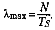
В случае множества идентичных серверов выбор определенного сервера для обслуживания определенного элемента данных не влияет на время обслуживания. На рис. 4, б показана структура с организацией нескольких очередей для множества серверов. Такое изменение структурной схемы в значительной степени влияет на производительность всей системы в целом.

Рис. 4. Различные схемы организации очереди к N серверам
Искомые параметры можно вычислить с помощью нескольких несложных формул, перечисленных в табл. 2.
Такие формулы могут быть использованы для вычисления качественных и количественных характеристик систем с очередями, представленных на рис. 2 и 4.
Следует подчеркнуть, что вычисления с применением этих формул носят приближенный характер.
Таблица 2. Формулы для расчета параметров систем с очередями
|
Основные
|
Один сервер
|
Множество серверов |

|

|
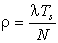
|
|
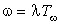
|

|
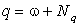
|
|
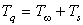
|
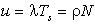
|
Эти формулы могут быть полезны для вычисления некоторых параметров при "интуитивном" выборе структуры системы.
Для получения формулы
достаточно заметить, что для скорости поступления
элементов данных
, среднее время между
поступлениями элементов будет определяться выражением
 .
.
Если интервал времени T меньше интервала времени
, то можно будет записать
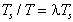.
Аналогичные рассуждения подходят и в случае со множеством серверов: .
Рассмотрим момент времени прихода очередного элемента данных.
При поступлении этого элемента в систему в очереди
находится в среднем
элементов данных, которые ожидают обслуживания.
В момент, когда этот элемент покидает очередь для обслуживания, он оставляет после себя такое же среднее количество элементов в очереди (на то оно и среднее количество, что не меняется).
Среднее время, которое элемент ждет своей очереди до
обслуживания, равно
.
А так как элементы поступают в очередь со скоростью
, то можно утверждать,
что за промежуток времени
должно поступить
 элементов данных.
элементов данных.
Следовательно, .
Рассуждая аналогично, можно заключить, что
.
Из табл. 2 видно, что время, которое элемент данных находится в системе, равно сумме времени ожидания обслуживания и времени самого обслуживания.
На любой момент времени количество элементов во всей системе равно сумме количества элементов, ожидающих обслуживания, и количества элементов, которые уже обслуживаются.
Для одного сервера среднее число элементов, которые
обслуживаются в данный момент времени, равно р.
Следовательно, для одного
сервера.
Аналогично, , если рассматривать случай с N серверами.
Основная задача при проведении анализа очередей заключается в получении информации о:
- скорости поступления элементов данных в очередь; ╥
- времени обслуживания этих элементов на сервере на входе в систему;
- общем количестве ожидающих элементов;
- времени ожидания элементов в системе.
При этом важно знать средние значения этих параметров и диапазон их изменений.
Следовательно, большое значение при анализе очередей
имеет знание стандартных (среднеквадратичных) отклонений
каждого из перечисленных параметров; эти отклонения
обозначаются
 ,
, ,
,  ,
,
 .
.
Для анализа систем или отдельных модулей сетевых устройств могут быть полезны и другие показатели.
Например, при вычислении размеров буферной памяти для моста или мультиплексора, предназначенного для того или иного сегмента рынка, его производителям могут потребоваться данные о размере буфера, при котором вероятность его переполнения будет меньше, допустим, 0.001.
Для ответа на эти вопросы, в основном, необходимо знать закон изменения скорости поступления элементов данных в систему и закон распределения времени обслуживания элементов данных сервером.
Для упрощения процесса вычислений допускаем, что изменение скорости поступления элементов данных подчиняется закону Пуассона.
Для применимости закона Пуассона необходимо выполнение следующих гипотез:
- Поступление одного элемента данных не зависит от поступления другого элемента, то есть события происходят независимо;
- Никогда не поступают сразу два или более элементов данных;
- Среднее количество поступлений не изменяется со временем (то есть распределение статично).
При соблюдении этих условий вероятность поступления элемента данных подчиняется закону Пуассона, который описывается следующей формулой:

где е - основание натуральных логарифмов;
- скорость поступления
элементов данных;
n - количество элементов, поступивших за время t.
Закон Пуассона часто используется в различных приложениях теории вероятности и статистики. Его преимуществом является простота получаемых формул. Практически всегда, когда последовательность каких-либо событий разделена случайными интервалами времени и справедливы три перечисленные выше гипотезы, то, с некоторым приближением, можно использовать пуассоновский закон.
Продолжительность обслуживания элементов на сервере обычно описывается несколько другими законами.
Чаще всего в этом случае используется закон интервалов или экспоненциальный закон.
Для этого закона используются большое количество продолжительностей времен обслуживания.
Рассмотрим пример с использованием 1000 продолжительностей времен обслуживания (каждый промежуток из этой 1000 отличается по времени). Такое количество продолжительностей позволяет повысить точность вычислений. Для упрощения расчетов интервалы времени обслуживания группируются. Например: первая группа с временами обслуживания, лежащими в промежутке времени от 0 до 15с, следующая группа с временами обслуживания, лежащими в промежутке времени от 15 до 30 с, следующая - от 30 до 45 с и т. д. Приведем таблицу, поясняющую смысл сказанного (табл. 3).
Таблица 3. Пример распределения интервалов обслуживания
|
Сгруппированные интервалы времени, c
|
Экспоненциальный закон
|
|
0
|
1000
|
|
15
|
798
|
|
30
|
635
|
|
45
|
508
|
|
60
|
406
|
|
75
|
324
|
|
90
|
259
|
|
105
|
207
|
|
120
|
165
|
|
135
|
131
|
|
150
|
105
|
|
165
|
84
|
|
180
|
67
|
|
195
|
53
|
|
210
|
42
|
|
225
|
34
|
|
240
|
27
|
|
255
|
21
|
|
270
|
17
|
|
285
|
14
|
|
300
|
11
|
В промежутке времени 0-15 с (второй столбец) имеет место 1000 вариантов продолжительностей обслуживания. В промежутке 15-30 с (третий столбец) имеет место 798 вариантов продолжительностей обслуживания. А в промежутке времени 300-315 секунд (последний столбец) имеет место всего 11 вариантов продолжительностей обслуживания.
Если интервалы времени, разделяющие события, поместить на одной прямой вплотную, то получится ряд событий, удовлетворяющих закону Пуассона. При этом три перечисленные, гипотезы остаются верными и для времени обслуживания. Однако интервалы времени наступления событий могут располагаться не вплотную, так как возможны случаи простоя сервера. В этом случае применяется экспоненциальный закон распределения времени обслуживания.
Кроме того, для описания закона распределения времен поступления элементов и их обслуживания может быть использован нормальный закон распределения.
Для проведения оценки системы можно определить параметр, характеризующий интенсивность работы системы.
Так как рассматриваются средние величины, важно, чтобы норма поступления элементов данных не превосходила общего уровня обслуживания,
то есть
 или
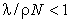
или
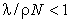
Эта величина и определяет интенсивность работы системы.
Существуют классические формулы, которые были выведены датским инженером Эрлангом при проведении им аналитического изучения очередей. Эрланг изучал очереди применительно к работе телефонной сети. Составлены специальные таблицы, с помощью которых можно определить ряд параметров для системы с очередями. Например, можно определить среднее время ожидания элементов в очереди, как функцию интенсивности обслуживания, уровня утилизации и количества серверов.
Для обобщения всех возможных (или точнее, всех вероятных) случаев организации системы с очередями, к которым применимы рассмотренные выше допущения, был разработан удобный подход. Все такие системы можно разделить, исходя из применяемых законов распределения времен обслуживания и поступления в систему. Система (в том аспекте, который мы рассматриваем) может быть определена тройкой X/Y/N, где Х - это закон распределения времени поступления элементов данных в систему; Y - закон распределения времени обслуживания элементов данных сервером и N - число серверов. Для рассматриваемых здесь систем характерны следующие возможные законы распределения (ниже также указаны буквы, которыми обозначаются эти законы):
- G - нормальное распределение времени поступления или времени обслуживания элементов данных;
- М - пуассоновское распределение времени поступления; пуассоновское или экспоненциальное распределение времени обслуживания элементов данных;
- D - детерминированное время поступления или время обслуживания элементов данных.
Следовательно, модель М/М/1 определяет систему с одним сервером, пуассоновским распределением времени поступления элементов данных в систему и экспоненциальным временем обслуживания элементов на сервере.
Система с одним сервером
В первом столбце табл. 4 показаны формулы для определения некоторых параметров системы с одним сервером, которая подчиняется модели M/G/1.
Первая модель:
- скорость поступления элементов данных подчиняется пуассоновскому закону,
- время обслуживания - нормальному распределению.
Использование масштабирующего коэффициента А в значительной мере упрощает формулы для вычисления основных выходных параметров.
Следует учесть, что коэффициент масштабирования зависит только от отношения стандартного (среднеквадратичного) отклонения времени обслуживания к среднему времени обслуживания (см. формулу).
При этом не требуется никакой другой информации о времени обслуживания.
Другие два случая, разобранные в табл. 4,
2-я:
- модель с распределением времени ожидания по пуассоновскому закону,
- времени обслуживания по экспоненциальному закону (М/М/1, второй столбец)
3-я:
- модель, в которой время обслуживания всех элементов одинаково (а значит, отклонение времени обслуживания равно нулю),
- время поступления элементов подчиняется пуассоновскому закону (M/D/1, третий столбец в табл. 4).
Таблица 4. Формулы для определения параметров системы с одним сервером
| Модель с нормальным распределением времени обслуживания (M/G/1) | Модель с экспоненциальным распределением времени обслуживания (М/М/1) | Модель с постоянным временем обслуживания (M/D/1) |

|
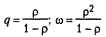
|
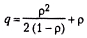
|
|
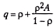
|
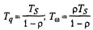
|
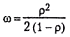
|

|

|

|

|

|

|
|
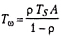
|

|

|
|
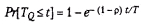
|

|
|

|
||

|
Практика показывает, что наихудшую производительность демонстрирует система с экспоненциальным распределением времени обслуживания, а наилучшую производительность - система с постоянным временем обслуживания (что, впрочем, неудивительно).
Поэтому обычно можно рассматривать систему с экспоненциальным распределением времени обслуживания, как систему с худшими параметрами.
Эти же рассуждения применимы при рассмотрении различных распределений времен поступления элементов данных (то есть различного характера варьирования скорости прихода данных в систему).
Для скорости поступления элементов, подчиняющейся пуассоновскому распределению, время между поступлениями элементов изменяется по формуле Пуассона (см. выше), и коэффициент стандартного отклонения от среднего равен единице.
Если наблюдаемый коэффициент меньше единицы, то скорость поступления элементов постоянна. В этом случае применение предположения о пуассоновском распределении скорости поступления даст завышенную оценку размера очереди и задержек в ней.
С другой стороны, если коэффициент больше единицы, то перегрузка системы в этом случае становится более вероятной.
Система с несколькими серверами
В табл. 5 приведены формулы для определения основных параметров в случае работы с системой со множеством серверов.
Эти формулы применимы только для случая использования модели M/M/N. То есть предполагается пуассоновский характер распределения времен поступления элементов данных и экспоненциальный характер времени обслуживания этих элементов.
При этом формула Пуассона для распределения времени обслуживания применима для всех N серверов.
Во всех выражениях используется функция Эрланга С, которая, в одних случаях, определяет вероятность того, что все сервера заняты в определенный момент времени, а в других случаях - вероятность того, что количество элементов данных, находящихся в данный момент времени в системе (ожидающих в очереди или обслуживающихся), будет больше или равно количеству серверов.
Для вычисления функции С применима следующая формула:

где К - коэффициент пуассоновского распределения.
Значение этой функции зависит от количества серверов
(N) и их утилизации ().
Функцию Эрланга приходится часто применять при расчете очередей, что значительно усложняет вычисления.
Следует отметить, что для системы с одним сервером эта
функция значительно упрощается. А именно: С = (1, u) =
. Такое упрощение как раз и
позволяет для системы с одним сервером получить красивые
законченные формулы (табл. 5).
Таблица 5. Формулы для определения параметров системы со множеством серверов

|
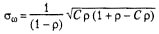
|
|
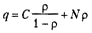
|
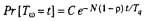
|
|
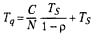
|

|
|
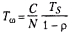
|
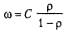
|
|
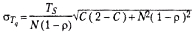
|

|
Рассмотренная теория очередей достаточно эффективно может быть использована на практике в различных ситуациях. Приведем пример практического применения теории очередей. Рассмотрим локальную сеть, имеющую в своем составе 100 рабочих станций и один сервер (1^ = 1), который обслуживает общую базу данных. Среднее время ответа сервера на запрос - 0.6 с. Стандартное отклонение этого времени также равно 0.6 с. В пиковые периоды работы локальной сети скорость поступления запросов к серверу достигает значения 20 запросов в минуту.
Ответим на следующие вопросы:
Q Чему равно среднее время ответа сервера?
О Если время ответа, равное 1.5 с, рассматривается как максимально приемлемое, то насколько может вырасти процент загрузки до достижения насыщения сервера?
О Если ожидается, скажем, 20-процентное увеличение утилизации сервера, то насколько увеличится время ответа (на 20 %, больше чем 20 %, меньше чем 20 %)?
Предположим, что в рассматриваемой ситуации применима модель М/М/1. Будем игнорировать задержки, вносимые сетью, полагая, что распределение задержки в ней можно не принимать в расчет.
Вычислим некоторые параметры сети.
Сначала найдем скорость поступления К:
20 поступлений в минуту = 20/60 поступлений в секунду = 1/3 поступлений в секунду.
Утилизация сервера вычисляется:
(1/3 поступлений в секунду) (0.6 секунд на передачу) = 0.2.
Вычислим среднее время ответа:
0.6/(1 - 0.2) = 0.75 с.
На второй вопрос однозначно ответить сложно, так как существует ненулевая вероятность того, что в некоторых случаях время ответа сервера будет превышать 1.5 с. Поэтому можно предположить, что в 90 % ответы сервера будут даны менее чем за 1.5 с. Если сделать такое допущение, то мы сможем воспользоваться формулой из второго столбца в табл. П4.4:
Получаем: Ts/(1 - р) 2.3 = 1.5 с. Учитывая 0.6 с, получаем утилизацию сервера р = 0.008, то есть 8 %. Итак, можно сказать, что при изменении загруженности сервера в диапазоне от 8 % до 20 % (см. выше) время ответа сервера будет менее 1.5 с в 90 % случаев.
В заключение определим зависимость между возрастанием нагрузки и увеличением времени ответа. Время ответа будет увеличиваться несколько медленнее, чем утилизация. Действительно, в нашем случае, если утилизация сервера возросла с 20 % до 40 %, то значение Гц изменится от 0.75 с до 1.0 с (как нетрудно подсчитать), что означает увеличение на 33.3 %.
Вопросы для самопроверки:
1. Что определяет и от чего зависит эффективность работы Intranet-системы ?
2. Назовите формальные параметры оценки качества функционирования Intranet-системы .
3. Чем отличается методика оценки качества функционирования Intranet-системы с одним сервером и несколькими серверами?
4. Как ценивается среднее время ответа сервера?
5. Какие особенности оценки времени ответа при работе Intranet-системы в глобальных сетях?
3. Модели программ. Методика моделирования ресурсов ВС. Модели устройств-ресурсов и способы их описания
Методические указания
Рекомендуется рассмотреть следующие вопросы: модели программ, методика моделирования ресурсов ВС и модели устройств-ресурсов, способы их описания. При этом моделирование программ следует выполнять при некотором упрощении случайных процессов, т.е. с использованием только математических ожиданий случайных величин без учета законов распределения. Это позволит существенно упростить математические выражения в моделях, сделает главную задачу теории разрешимой аналитически, и вместе с тем погрешность результатов при этом не превысит 20%.
Модели программ
К принципам моделирования программ относится принцип, который определяет класс моделей программ и связан со стохастической природой не только количества переменных в программе, но и характера вычислительного процесса, порождаемого ею.
Конкретная реализация случайного процесса зависит от размерности задачи, решаемой по этой программе, и значений исходных данных для нее.
Этот принцип называется принципом стохастичности потоков заявок на ресурсы и, естественно, влечет за собой необходимость моделирования ВС в соответствии с теорией случайных процессов.
Требования к моделям программ могут быть сформулированы так:
1. Модель должна с высокой достоверностью отображать вычислительный процесс, порождаемый программой, т.е. она должна иметь упорядоченные по времени последовательности запросов на различные типы ресурсов ВС.
2. Запросы должны представляться как реализации случайного процесса, т.е. возникать в случайные моменты времени и иметь случайные значения характеристик, описывающих ресурс.
3. Случайные величины следует представлять как минимум их математическими ожиданиями. При точном представлении случайных величин необходимо учитывать их законы распределения.
4. В запросах должны быть определены количественные показатели требований на ресурсы.
Моделирование программ будем выполнять при некотором упрощении случайных процессов, т.е. с использованием только математических ожиданий случайных величин без учета законов распределения.
Это позволит существенно упростить математические выражения в моделях, сделает главную задачу теории разрешимой аналитически, и вместе с тем погрешность результатов при этом не превысит 20%.
Сделаем еще два допущения, существенно упрощающих модель и практически не вносящих погрешностей в расчеты.
1. Примем за равновеликие вычислительные трудоемкости в операциях суммирования битов и пересылки байта;
2. Работу арифметико-логического устройства (АЛУ) рассмотрим в неразрывной связи с оперативной памятью, считая при этом, что вычислительная трудоемкость по пересылке информации между АЛУ и оперативной памятью включена в трудоемкость операции суммирования битов.
При моделировании программы необходимо учитывать логическую организацию ее функционирования.
На рис. 5.1 показана схема распределения памяти для программы, на рис. 5.2 - циклограмма ее выполнения. С целью упрощения изложения теории на рис. 5.1 и в последующих выкладках рассматривается внешняя память только прямого доступа.
Если программа не может быть целиком размещена в
оперативной памяти из-за ограниченной емкости последней,
то она разделяется на части
 , называемые загрузочными
модулями, которые хранятся во внешней памяти как записи
, составляющие файл
, называемые загрузочными
модулями, которые хранятся во внешней памяти как записи
, составляющие файл
 , называемый главным
файлом.
, называемый главным
файлом.
Данные, связанные с программой, разделяются на файлы
 , а файлы, в свою очередь,
разделяются на записи a1, а2, ...; b1, b2,
...
, а файлы, в свою очередь,
разделяются на записи a1, а2, ...; b1, b2,
...
В зависимости от способа использования данных при решении задач различают входные и входные-выходные файлы.
Входной файл
 содержит исходные данные, только читаемые из файла в
процессе решения задачи.
содержит исходные данные, только читаемые из файла в
процессе решения задачи.
Входные файлы существуют до начала решения задачи;
выходной файл
 - результаты решения
задачи, записываемые в файл в порядке их получения;
входной-выходной файл используется как для чтения, так и
для загрузки их в процессе решения задачи;
подразделяется на основные и рабочие.
- результаты решения
задачи, записываемые в файл в порядке их получения;
входной-выходной файл используется как для чтения, так и
для загрузки их в процессе решения задачи;
подразделяется на основные и рабочие.

Рис. 5.1
Основной файл существует до начала и/или/ по окончании решения задачи.
Рабочий файл создается только на период решения задачи и содержит в себе промежуточные данные, необходимые лишь для одного прогона программы.
Для решения задачи в оперативной памяти выделяется раздел, в котором условно можно указать две части: область программы и область данных (рис.5.1).
Область программы имеет емкость, достаточную для размещения подмножества загрузочных модулей, которые должны одновременно присутствовать в оперативной памяти в процессе решения задачи.
Задача начинает выполняться с момента загрузки в
оперативную память корневого (ведущего) модуля
 и передачи ему управления.
В некоторый момент времени модуль
может вызвать в оперативную память модуль
и передачи ему управления.
В некоторый момент времени модуль
может вызвать в оперативную память модуль
 , который, в свою
очередь, может обратиться к модулю
, который, в свою
очередь, может обратиться к модулю
 и т.д.
и т.д.
В результате в области программы могут одновременно
находится несколько модулей
,
,
, ... .
.
После завершения работы модуль
передает управление вызвавшему его модулю и область
памяти, занимаемая модулем
, считается свободной и
в нее может быть вызван очередной модуль.
Таким образом, в каждый момент времени в оперативной памяти присутствует лишь часть модулей, входящих в программы.
В области выделяется подобласть D1, в которой размещаются данные, в основном постоянно используемые в процессе решения задачи.
Доступ к данным, размещенным в файлах
, организуется
выделением областей оперативной памяти
 ,
,
 ,
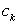,
называемых буферами ввода-вывода.
,
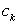,
называемых буферами ввода-вывода.
Каждый из буферов обеспечивает размещение минимум одной записи из соответствующего файла.
Для каждого файла - свой буфер.
Запись вызывается в буфер командами ввода-вывода, после чего данные, включенные в эту запись, становятся доступными для обработки.
Аналогично, результаты, формируемые программой, заносятся в область буфера и по мере формирования записей переносятся в выходные файлы.
Перед выполнением программы корневой модуль
загружается в начало раздела, выделенного задаче.
Порядок выполнения программы показан на рис. 5.2.
Отрезки на осях времени t обозначают периоды
активного состояния процессов обработки С и обращения к
файлам  .
.
Выполнение программы состоит из последовательности периодов обработки информации и обращения к файлам, следующих в порядке, указанном программой.
Длительность периодов определяется трудоемкостью работ - количеством операций, которые должен выполнить процессор, количеством операций, обеспечивающих передачу при обращении к файлу, и быстродействием устройств, используемых для выполнения соответствующих работ.
В распоряжение выполняемой программы должны быть представлены необходимые ресурсы.
Выполнение программы, обеспеченной необходимыми ресурсами, можно рассматривать как последовательность этапов обслуживания запросов программы к устройствам ЭВМ.

Рис. 5.2
Разделы оперативной и внешней памяти, закрепленные за программой, остаются занятыми в течение всего периода выполнения программы. Устройства-процессоры, системы ввода-вывода и внешние запоминающие устройства используются периодически и в промежутки, свободные от обслуживания данной программы, могут быть предоставлены в распоряжение других программ.
Учитывая требования к моделям, принятые допущения и
логическую организацию функционирования программы,
модель программы может быть представлена как
вычислительный процесс, состоящий из последовательности
этапов счета и ввода-вывода информации при обращении к
файлам
(рис.5.2). Состояние вычислительного процесса,
соответствующее этапу счета, обозначим символом
 , а состояния,
соответствующие обращениям к файлам
символами
, а состояния,
соответствующие обращениям к файлам
символами
 . Окончание
вычислительного процесса (ВП) будем рассматривать как
переход процесса в состояние
. Окончание
вычислительного процесса (ВП) будем рассматривать как
переход процесса в состояние
 , поглощающее
вычислительный процесс. В указанных обозначениях
вычислительный процесс - это последовательность
состояний 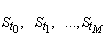,изменяющихся в
момент времени
, поглощающее
вычислительный процесс. В указанных обозначениях
вычислительный процесс - это последовательность
состояний 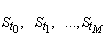,изменяющихся в
момент времени  , причем
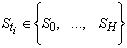 и заключительное состояние
процесса
, причем
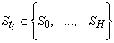 и заключительное состояние
процесса
 Однако поставить в соответствие каждому
Однако поставить в соответствие каждому
 одно из состояний
одно из состояний
 - непростая задача,
поскольку вычислительный процесс носит случайный
характер. Она может быть решена сравнительно просто,
если смену состояний описать Марковской цепью: принять
допущение об отсутствии последствия в вычислительном
процессе. Тогда процесс становится Марковским,
определяемым множеством присущих ему состояний
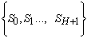, матрицей вероятностей
переходов
- непростая задача,
поскольку вычислительный процесс носит случайный
характер. Она может быть решена сравнительно просто,
если смену состояний описать Марковской цепью: принять
допущение об отсутствии последствия в вычислительном
процессе. Тогда процесс становится Марковским,
определяемым множеством присущих ему состояний
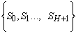, матрицей вероятностей
переходов

и распределением вероятностей
 состояний
состояний
 в момент времени
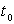. Будем считать, что
вычислительный процесс развивается следующим образом.
в момент времени
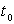. Будем считать, что
вычислительный процесс развивается следующим образом.
Начинается он с состояния
, т.е. программа начинает
выполняться с этапа счета. Этап ввода-вывода может быть
инициирован только процессором, т.е. может следовать
только за этапом счета. Это означает, что после каждого
этапа ввода-вывода следует этап счета. Вероятности
начальных состояний будут равны:
= (1, 0, 0, ... , 0),
а матрица вероятностей переходов примет вид
 (5.1)
(5.1)
Из состояния счета
процесс с соответствующей вероятностью может перейти в
состояния
, представляющие этапы
обращения к файлам , или
поглощающее состояние .
Из состояний
процесс с вероятностью 1 возвращается в состояние счета
. Достигнув поглощающего
состояния , процесс с
вероятностью 1 навсегда остается там. Переходы между
состояниями
 представляются на размеченном графе дугами, на которых
обозначены вероятности переходов, отличные от 1 (рис.
5.3).
представляются на размеченном графе дугами, на которых
обозначены вероятности переходов, отличные от 1 (рис.
5.3).

Рис. 5.3
Значения вероятностей
 предопределяют ход вычислительного процесса, зависят от
параметров трудоемкости алгоритма и вычисляются
следующим образом. Трудоемкость алгоритма определяет, в
частности, среднее число
предопределяют ход вычислительного процесса, зависят от
параметров трудоемкости алгоритма и вычисляются
следующим образом. Трудоемкость алгоритма определяет, в
частности, среднее число
 обращений к файлам
. Следовательно, среднее
число переходов из состояний
в состояния
должно быть (
обращений к файлам
. Следовательно, среднее
число переходов из состояний
в состояния
должно быть ( ).Один раз
процесс переходит из состояния
в поглощающее состояние
.
).Один раз
процесс переходит из состояния
в поглощающее состояние
.
Таким образом, ВП должен выходить из состояния
в среднем
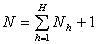раз (5.2)
Значение
 определяет долю переходов в состояние
определяет долю переходов в состояние
 по отношению к всевозможным
переходам из состояния в
состояния . Эта доля
равна в среднем (h
- номер файла, к которому обращается процесс).
Следовательно,
по отношению к всевозможным
переходам из состояния в
состояния . Эта доля
равна в среднем (h
- номер файла, к которому обращается процесс).
Следовательно,
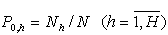, (5.3) .

Количество работы, выполняемой на каждом из этапов,
характеризуется параметрами
 алгоритма. Значение
определяет среднее количество процессорных операций,
выполняемых за одну реализацию алгоритма, а значения
- среднюю трудоемкость этапов, соответствующих
состояниям
. Средняя трудоемкость
одного этапа
алгоритма. Значение
определяет среднее количество процессорных операций,
выполняемых за одну реализацию алгоритма, а значения
- среднюю трудоемкость этапов, соответствующих
состояниям
. Средняя трудоемкость
одного этапа , где
N - среднее число этапов счета, определяемое
(5.2).
, где
N - среднее число этапов счета, определяемое
(5.2).
Трудоемкость каждого этапа рассмотрим как случайную
величину
 Vh с математическим
ожиданием
Vh с математическим
ожиданием  ; законы
распределения случайных величин
; законы
распределения случайных величин
 оговорим особо.
оговорим особо.
Таким образом, под моделью вычислительного процесса
будем понимать цепь Маркова с N+2 состояниями,
начальным состоянием и
матрицей вероятностей (5.3); под реализацией
вычислительного процесса - случайную последовательность
состояний  , (их количество
колеблется вокруг среднего N для каждой
конкретной реализации), порядок смены которых
определяется в вероятностном смысле матрицей
вероятностей переходов.
, (их количество
колеблется вокруг среднего N для каждой
конкретной реализации), порядок смены которых
определяется в вероятностном смысле матрицей
вероятностей переходов.
С состояниями
,...,
связано определенное количество работы, характеризуемое
значениями случайных величин
соответственно.
Диаграмма вычислительного процесса, порождаемого Марковской моделью, изображена на рис. 5.3. Значение Vi j определяет трудоемкость соответствующего этапа и предоставляет собой j- е значение случайной величины Vi, математическое ожидание которой q i . Состояние S 3 - поглощающее: достигнув его, процесс прекращается.
Пример. Построим Марковскую модель вычислительного процесса, порождаемого алгоритмом, трудоемкость которого характеризуется следующими параметрами: q =100 млн. операций; N 1 =19 обращений к файлу F 1; N2=180 обращений к файлу F2; q 1 =2000 байт; q 2 =500 байт за обращение к файлу.
В соответствии с (5.2) среднее число этапов счета при одном прогоне алгоритма N=N1+N2+1=200. Вероятности перехода процесса из состояния счета S0 в состояния S1, S2, S3 определяются (5.3) и равны соответственно:
P01=N1/N=19/200=0,095; P02=N2/N=180/200=0,9;
P03=1/N=0,005.

Рис . 5.4
Подставляя эти значения в матрицу вероятностей
переходов, увидим, что с вероятностью
0,095 за
этап счета произойдет обращение к файлу
F1, с вероятностью
0,9 -
обращение к файлу
F2
и с вероятностью
0,005
вычислительный процесс прекратится. Средняя трудоемкость этапа счета в
соответствии с q0=q/N=0,5
млн. операций.
Элементы матрицы
Р
переходных вероятностей определяются, как правило,
расчетным способом при имитации функционирования
операторной схемы алгоритма, во время которой
анализируются значения предикатов в операторах
ветвления алгоритма, а также подсчитывается
количество операторов ввода-вывода. Имитируется
функционирование схемы для различных вариантов
исходных данных и размерности задачи.
Когда матрицу
Р
аналитическим способом определить невозможно,
прибегают к статистическим испытаниям программы, по
результатам которых определяют элементы матрицы
Р и все
необходимые характеристики для модели исследуемой
программы:
- вычислительную трудоемкость одиночного запроса на ресурс процессора q0;
-
интенсивность потока заявок на ресурс
процессора l0;
-
трудоемкость одиночного запроса к системе
ввода-вывода на пересылку порций информации
между фиксированным внешним запоминающим
устройством (ВЗУі) прямого
доступа и оперативной памятью qI;
-
интенсивность потока заявок на ресурс системы
ввода-вывода lі
при обменах информацией между ВЗУі
и оперативной памятью;
-
среднюю продолжительность поиска одного адреса
для информации, которую хранит исследуемая
программа на ВЗУi ti
;
-
интенсивность потока запроса от программы к
контрольному ВЗУ на поиск адресов lі
;
- трудоемкость одиночного запроса на ресурс распознавания или отображения информации к j-му устройству ввода-вывода (УВВj ) ; Wj ;
-
интенсивность потока заявок к ресурсу УВВj lj
;
-
среднюю продолжительность поиска одного адреса
для информации на УВВj tj;
-
интенсивность потока запросов к контролеру
УВВj на поиск адресов lj
;
-
трудоемкость одиночного запроса к системе
ввода-вывода на пересылку порции информации
между УВВj и оперативной памятью
Wj ;
-
интенсивность заявок к системе ввода-вывода при
обмене информацией между УВВj и
оперативной памятью lj.
3.1. Аналитический способ определения характеристик модели программы
Применительно к задачам определения характеристик операторы алгоритма будем подразделять на функциональные, перехода и ввода-вывода.
Функциональный оператор задает преобразование на множестве данных, т.е. некоторую совокупность вычислительных операций;
оператор перехода - порядок вычислений значений предикатов и правило выбора одного из возможных путей развития вычислительного процесса, соответствующего текущим значениям данных, отношения между которыми представляются предикатами. Функциональные операторы и операторы перехода задают совокупности вычислительных операций и отношений над данными и относятся к одному классу операторов, называемых основными операторами; оператор ввода-вывода - обращение к определенному файлу с целью передачи некоторого количества информации.
Совокупность операторов и связей между ними наиболее наглядно представляют графом алгоритма, который строится как композиция вершин, соответствующих операторам алгоритма, и дуг, отображающих связи между операторами. Выделяют вершины начальные, конечные, операторные. Начальная вершина не имеет ни одного входа и имеет только один выход. Такая вершина определяет начало алгоритма. Конечная вершина имеет не менее одного входа и ни одного выхода; определяет конец алгоритма. Операторная вершина соответствует основному оператору или оператору ввода-вывода.
Вершина, представляющая функциональный оператор или оператор ввода-вывода, может иметь любое, не меньше единицы, число входов и только один выход. Вершина, представляющая оператор перехода, может иметь любое, не меньшее единицы число входов и не меньше двух несовместных выходов. В любой ситуации оператор перехода определяет один и только один выход из представляющей его вершины.
Граф алгоритма является корректным, если выполняются следующие условия:
- имеется только одна начальная и только одна конечная вершины;
- для каждой вершины, кроме начальной, существует по меньшей мере один путь, ведущий в эту вершину из начальной;
- из каждой вершины, кроме конечной, существует по меньшей мере один путь, ведущий из этой вершины в конечную;
- активный выход из любой вершины должен вести только к одной вершине графа;
- при любых значениях логических условий (предикатов) существует путь из начальной вершины в конечную, причем любому фиксированному набору значений условий соответствует один такой путь.
Пример графа алгоритма показан на рис. 5.5.

Рис. 5.5.
Условимся вершины графа обозначить номерами
0,1, . . . К:
0
соответствует начальной вершине графа;
К
- конечной вершине;
1, . . . К-1
идентифицирует операторы алгоритма.
В программировании графы алгоритмов изображаются с
использованием набора фигур, обозначающих тип
оператора, и называются схемами алгоритмов
(программ).
Граф выполняет структуру алгоритма, определяя
множество операторов
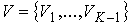
и дуг
 и
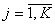
, связывающих операторы.
и
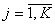
, связывающих операторы.
Для оценки трудоемкости алгоритма необходимо,
во-первых, разбить множество операторов на классы
основных операторов
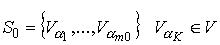
;оператор ввода-вывода
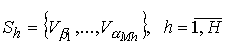
каждый
из этих операторов задает обращения к одному и тому
же файлу
Fh.
Во-вторых, для каждого основного оператора Va
необходимо определить среднее количество операций
Кa,
составляющих оператор, и для каждого оператора
ввода-вывода
Vb
- среднее количество информации
lb,
передаваемое при выполнении оператора.
В-третьих, переходы между операторами
Vi и
Vj
следует рассматривать как случайные события и
характеризовать их вероятностями
Pij, т.е. каждая дуга /i, j/
графа алгоритма должна быть отмечена вероятностью
перехода
Pij
, с которой переход из вершины
V1
выполняется именно по этой дуге, т.е. к вершине
Vj.
Так как вычислительный процесс не может
приостановиться в вершине
Vi, то с вероятностью 1 произойдет переход к
какой-либо вершине графа алгоритма. С учетом этого,
вероятности переходов должны отвечать условию


Значения
Pij
определяются следующим образом. Если за оператором
непременно выполняется оператор
j, Pij=1. Если переход осуществляется через условный
оператор, т.е. вычисляется предикат и в зависимости
от его значения определяется трасса алгоритма, то
значения Pij определяются вероятностями
значений предиката. Например, пусть оператор 2 (рис.
5.5) порождает переход к оператору 3 при
отрицательном значении некоторой переменной
Х и к
оператору 4 при положительном значении
Х. Если
известно, что величина
Х
равномерно распределена в диапазоне
(-1, +3),
то с вероятностью
0,25 ее
знак отрицателен и с вероятностью
0,75
положителен. Из этого следует, что переход к оператору 3
происходит с вероятностью
Р23=0,25
и переход к оператору 4 - с вероятностью
Р24=0,75.
3.2. Вычисление характеристик трудоемкости
Пусть
n1, ..., nK-1
- среднее число обращений к операторам
V1, ..., VK-1
за один прогон алгоритма. Среднее число операций,
выполняемых при одном прогоне алгоритма,
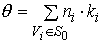
, (5.4)
среднее число обращений к файлу Fh
 (5.5)
(5.5)
среднее количество информации, передаваемое при
одном обращении к файлу Fh,
 (5.6)
(5.6)
В (5.4-5.6) суммирование выполняется по всем вершинам, относящимся к классу основных операторов S0 или классу операторов ввода-вывода Sh, обращающихся к файлу Fh. Из этих формул очевидно, что для оценки трудоемкости алгоритма прежде всего следует определить среднее число обращений n1, ..., nK-1 к операторам. Это можно сделать сетевым методом, трудоемкость которого не высока и не возникает необходимости в автоматизации вычислений. Суть сетевого подхода состоит в выделении путей на графе алгоритма, соответствующих минимальной, средней и максимальной трудоемкости последовательности операторов. Данные пути могут быть выделены только на графах, не содержащих циклов.
3.3. Оценка средней трудоемкости алгоритмов
Представим алгоритм в виде размеченного графа,
состоящего из
К операторных вершин и имеющего единственную конечную
вершину с
номером К=К+1; дуги графа отмечены вероятностями переходов
Pij.
Каждой вершине графа поставлено в соответствие
среднее значение трудоемкости
Кi
или lj. С учетом (5.4-5.6) задача оценки трудоемкости
алгоритма сводится к определению среднего числа
n1, n2, ..., nК
обращений к операторам за один прогон алгоритма.
Рассмотрим методику вычисления значений
n1, n2, ..., nК
для алгоритма, не содержащего циклы.
Для применения сетевого метода вершины графа должны
быть пронумерованы так, чтобы любая вершина имела
номер, больший любого номера предшествующих ей
вершин : начальной вершине присваивается номер
0;
очередной номер
i=1,2...
присваивается вершине, в которую входят дуги от уже
пронумерованных вершин с номерами, меньшими
i. При
этом любым двум вершинам должны соответствовать
разные номера. Конечная вершина графа должна иметь
максимальный номер
К.
Пример корректной нумерации вершин графа показан на рис. 5.6.

Рис. 5.6
Поскольку граф не содержит циклов, то при прогоне
алгоритма вершина 1 будет выполнена точно один раз,
т.е. n1=1. Среднее число попадания ВП в вершину i
определяется выражением
 ,
(5.7)
,
(5.7)
где
Pij
- вероятность перехода из вершины
j в
вершину
i.
Формула (5.7) объясняется так: процесс попадает в состояние
Si
только из других состояний
 с
вероятностями
Pij. Если процесс находился в состоянии
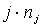
раз и
с
вероятностями
Pij. Если процесс находился в состоянии
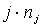
раз и
 , то процесс из этого состояния попадет в состояние
i в
среднем
, то процесс из этого состояния попадет в состояние
i в
среднем
 раз. Суммирование значений
по всем
j
находится число попаданий процесса в состояние
i из всех
других состояний
j.
раз. Суммирование значений
по всем
j
находится число попаданий процесса в состояние
i из всех
других состояний
j.
При установленном порядке нумерации вершин на
момент вычисления
ni
значения
n1, ..., ni-1
уже определены. Поэтому вычисление значения
ni сводится к суммированию произведений, причем,
поскольку
Pji=0
для всех jiто суммирование следует проводить для
j<i.
Пример.
Определим среднее число обращений
n1, ..., nК
к операторам алгоритма, изображенного на графе
рис.5.6. Применив (5.7), получим

Рассмотрим алгоритм, содержащий циклы (рис. 5.7).
Применить изложенную методику для определения
n1, ..., nК
невозможно, поэтому изучим приемы исключения циклов.
Для упрощения описания приемов примем, что алгоритм
состоит из однотипных операторов, например только из
основных операторов. Разделим циклы по рангам. К
рангу 1 относятся циклы, не содержащие внутри себя
ни одного цикла, к рангу 2 - циклы, внутри которых
есть циклы ранга не выше первого и т.д. Например,
алгоритм, изображенный на рис. 5.7, содержит два
цикла С1 и С2 ранга 1 и один
цикл С3 ранга 2.
Совокупность операторов, входящих в цикл, и
связывающих их дуг, за исключением дуги, замыкающей
цикл, называют телом цикла. Тело цикла ранга 1 -
граф без циклов. Применяя к этому графу описанную методику, можно определить
значения
ni для
каждого из операторов, принадлежащих телу цикла,
следовательно, трудоемкость тела цикла
С равна
 . Здесь суммирование
проводится по всем вершинам
Vj , содержащимся в цикле
С.
. Здесь суммирование
проводится по всем вершинам
Vj , содержащимся в цикле
С.
Пусть известно среднее число повторений цикла
nC, равное числу выполнений цикла при одном прогоне
алгоритма. Если вероятность перехода по дуге,
замыкающей цикл, равна
Pkl , то
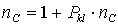,
откуда
nC=1/(1-Pkl).
Средняя трудоемкость цикла

и цикл можно заменить оператором с трудоемкостью
КС. Применяя указанную процедуру замены циклов
операторами ко всем циклам ранга 1, затем к циклам
ранга 2 и т.д., в конце концов придем к графу без
циклов, трудоемкость которого находится указанным
способом.
Пример.
Определим трудоемкость алгоритма, заданного графом,
изображенным на рис. 5.7. Положим, что трудоемкость
всех операторов одинакова и равна 1. Среднее число
повторений циклов
С1, С2
и
С3
определяется из вероятностей переходов, указанных на
рис. 5.7, значениями
nC1=5, nC2=20 и
nC3=10. Выделим тела циклов
С1 и С2
ранга 1. Их структура изображена на рис. 5.8.

Рис. 5.7
Применяя описанную методику к этим графам,
определяем среднюю трудоемкость
 и
и
 выполнения тел этих циклов:
выполнения тел этих циклов:
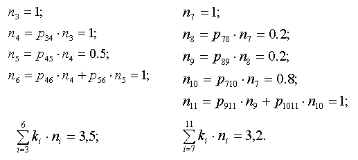
Средняя трудоемкость циклов
С1
и
С2
вычисляется умножением полученных значений на
среднее число повторений этих циклов:
=17,5
и
=64
операции.
Заменяя в графе (рис. 5.7) циклы
С1
и
С2
операторами
С1
и
С2
с трудоемкостью
и
, получим граф, вид которого показан на рис. 5.9.
Тело цикла
С3
определяется следующим образом:

С учетом числа nC3 повторений цикла
трудоемкость цикла составит
КС3=474
операции. Заменив цикл
С3 оператором
С3
с трудоемкостью
КС3,
получим граф (рис. 5.10).
Трудоемкость алгоритма, представленного этим
графом:
q=К1+КС3+К13=1+474+1=476
операций.

Рис.5.8.

Рис. 5.9

Рис. 5.10
3.4. Оценка минимальной и максимальной трудоемкости алгоритма
Минимально и максимально возможные значения
трудоемкости на момент окончания выполнения
оператора
Vi
обозначим соответственно через
Аi и
Bi. Имеем
А0=0 и В0=0. Тогда для остальных вершин с номерами
i=1,k
 , (5.8)
, (5.8)
 , (5.9)
, (5.9)
где
(j,i) -
дуга, выходящая из вершины
j и
входящая в вершину
i; D
-множество дуг графа программы;
min(Ai) и max(Bj)
определяются по отношению ко всем вершинам
j, из
которых выходят дуги, входящие в вершину
i;
значения
Ki min
и
Ki max
характеризуют минимальную и максимальную
трудоемкость оператора
Vi. Для конечной вершины
К графа
вычисляются значения
AK=min(Aj); BK=max(Bj),
(j,k)
D
(j,k)
характеризующие минимальную и максимальную
трудоемкость алгоритма.
Пример.
Определим минимальную и максимальную трудоемкость
алгоритма, изображенного на рис. 5.6. Примем, что
трудоемкость каждого оператора постоянна и равна 1.
Нумерация вершин на графе рис. 5.6 отвечает
рассмотренному правилу.
Применяя последовательно (5.8) и (5.9), получим
А0=0 B0=0
А1=min(A0)+1=1 B1=max(B0)+1=1
А2=min(A1)+1=2 B2=max(B1)+1=2
А3=min(A2)+1=3 B3=max(B2)+1=3
А4=min(A2)+1=3 B4=max(B2)+1=3
А5=min(A3)+1=4 B5=max(B3)+1=4
А6=min(A2,A3,A4)+1=3 B2=max(B2,B3,B4)+1=4
А7=min(A4)+1=4 B7=max(B4)+1=4
А8=min(A5,A6)+1=4 B8=max(B5,B6)+1=5
А9=min(A7,A8)+1=5 B9=max(B7,B8)+1=6
А10=min(A5,A9)+1=5 B10=max(B5,B9)+1=7
АK=min(A10)=5
BK=max(B10)+1=7
Таким образом, минимальная трудоемкость алгоритма
АК
равна пяти, максимальная
ВК
- семи операциям.
Минимальная и максимальная трудоемкость алгоритмов,
содержащих циклы, находится по аналогии с методом
определения средней трудоемкости алгоритмов с
циклами. При этом выделяются циклы ранга 1.
Находится А и
В
трудоемкости тела цикла. Минимальная и максимальная
трудоемкость цикла определяется значениями
 и
и
 , где
nmin
и
nmax - минимальное и максимальное число повторений
цикла. Затем цикл заменяется оператором с
трудоемкостью
, где
nmin
и
nmax - минимальное и максимальное число повторений
цикла. Затем цикл заменяется оператором с
трудоемкостью
 и
и
вновь применяется процедура исключения циклов.
Процесс повторяется до тех пор, пока граф алгоритма
не будет преобразован к форме без циклов.
и
и
вновь применяется процедура исключения циклов.
Процесс повторяется до тех пор, пока граф алгоритма
не будет преобразован к форме без циклов.
Минимальное и максимальное число повторений циклов nmin и nmax должно быть задано в исходных данных решения задачи.
3.5. Методика моделирования ресурсов ВС.
Модели устройств-ресурсов и способы их описания
Модель процессора и оперативной памяти
Подсистема “процессор - оперативная
память” рассматривается как одноканальная СМО
(рис. 5.11), обслуживающим каналом (прибором) в
которой является процессор
Пр. При
работе ВС в мультипрограммном режиме в оперативной
памяти
ОП
размещено несколько программ
П1, П2, ..., ПМ. Одни программы находятся в состоянии готовности к
выполнению, другие - в состоянии ожидания некоторых
событий, например завершения операций
ввода-вывода.
Совокупности готовых к выполнению программ
соответствует очередь
0 заявок
в СМО (рис. 5.11). Программа из очереди, получившая
доступ к процессору
Пр,
переходит в состояние счета. Среднее время непрерываемого
счета программы определяет среднюю продолжительность
V
процесса обслуживания заявки в СМО. Процесс счета,
т.е. обслуживание программы процессором,
прекращается в момент, когда программа обращается к
системе ввода-вывода, т.е. к внешнему устройству
(ВЗУ) или устройству ввода-вывода. При этом
считается, что заявка на счет обслужена и покидает
систему “процессор - оперативная
память”. Обслуживание этой заявки, т.е. этой
программы, будет продолжено другим устройством ВС.
Интенсивность l
поступления заявок в СМО определяется суммарной
интенсивностью пополнения списка готовых к
выполнению программ, как за счет поступления новых
программ, так и за счет программ, для которых
завершен ввод-вывод. Непременное условие готовности
программы - наличие ее в оперативной памяти.
3.6. Модель мультиплексного канала
Мультиплексный канал (МК) обеспечивает параллельную
и независимую работу подключенных к нему устройств
ввода-вывода УВВ различных типов (рис. 5.12, а):
устройств ввода с перфокарт УВП, печатающих
устройств ПУ, пультовой пишущей машинки ППМ и т.п.
Поэтому каждое из этих устройств должно
рассматриваться как отдельный канал СМО. Несколько
однотипных устройств ввода-вывода могут
рассматриваться как многоканальная СМО с одинаковым
средним временем обслуживания заявок в каждом из
каналов.
МК с подключенными к нему устройствами ввода-вывода
представляется в виде СМО (рис. 5.12, б): система
S1
отображает работу
К1
однотипных устройств ввода-вывода УВВ; в каждом из
которых заявки на ввод-вывод обслуживаются в среднем
за время
V1.
Интенсивность входящего в эту систему потока равна
доле
р1
от интенсивности l
всех заявок, обслуживаемых МК. По аналогии, система
Sn
отображает работу других
Kn
устройств ввода-вывода УВВ со средним временем
обслуживания заявок
Vn и интенсивностью входящего потока
 . Очевидно, что должно выполняться равенство
. Очевидно, что должно выполняться равенство

3.7. Модели селекторных каналов
Селекторный канал (СК) в отличие от МК работает в
монопольном режиме. ВЗУ, подключаемые к СК, могут
работать совместно во времени лишь при выполнении
подготовительных операций, таких как подвод ленты,
установка механизма доступа на заданный цилиндр
пакета магнитных дисков и т.п. При передаче данных
СК обслуживает в каждый момент времени обращение
только к одному ВЗУ. Модель работы СК рассмотрим на
примере канала с однотипным ВЗУ (рис. 5.13, а).
Модель должна отображать различные этапы в
обработке запросов программ на ввод-вывод
информации: на первом этапе выполняются
подготовительные операции; на втором - передача
информации между оперативной памятью и одним из ВЗУ.
В результате процесс работы канала и ВЗУ можно
представить как процесс последовательного
обслуживания запросов в двух СМО (рис. 5.13, б),
первая из которых отображает этап выполнения
подготовительных операций в ВЗУ, и вторая - этап
передачи данных (ПД) по каналу. Продолжительность
этих этапов составляет в среднем
V1
и
V2
единиц времени. На вход СК поступает поток заявок с
интенсивностью l. Заявки с вероятностью
Pi, (i=1,k)
направляются в одну из систем ВЗУi .
Рассматриваемая модель - модель с блокировкой
процессов обслуживания заявок в различных системах:
ВЗУi, завершившее подготовительную
операцию, не может начать обслуживание следующей
заявки из очереди
Qi до тех пор, пока канал, т.е. система
ПД, не завершит передачу данных из ВЗУi .
Эффектом блокировки можно пренебречь, если учесть,
что задержки при передаче данных на порядок меньше
времени выполнения подготовительных операций в ВЗУ.
В связи с этим системы ВЗУ1, ..., ВЗУК
и ПД (рис. 5.13) могут рассматриваться как
независимые СМО.

Рис.5.11 Модель мультиплексного канала


Рис. 5.12 Модель мультиплексного канала

Рис. 5.13 Модели селекторных каналов
Вопросы для самопроверки:
1.
От чего зависит конкретная реализация случайного процесса?
2.
Перечислите требования к моделям программ.
3.
Что определяет значение q
?
4.
Что предопределяют значения вероятностей. P0Н+1 и как
они вычисляются?
5.
Как вычисляются характеристики трудоемкости?
6.
Как оцениваются минимальная и максимальная
трудоемкости алгоритма?
7.
Что определяет среднее время непрерываемого счета
программы?
8. Изобразите модель мультиплексного канала.